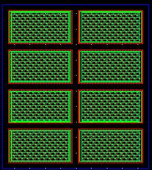
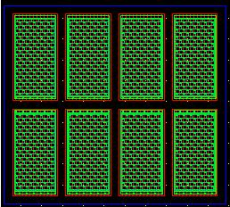

|
unit width(x) = 10u, unit length(y) = 10u, columns in x = 2, rows in y = 2
|
unit width(x) = 20u, unit length(y) = 10u, columns in x = 2, rows in y = 4
 |
|---|---|
|
unit width(x) = 10u, unit length(y) = 20u, columns in x = 4, rows in y = 2
 |